J'aime!
Compagnie à trois temps
Opérette en trois actes, d’un livret d’Albert Willemetz et Saint-Garnier, sur une musique d’Henri Christiné.
Tout commence dans un château de Bretagne… Chez les Malassis de la Panouille, les caisses sont à sec, alors pour refaire leur fortune, baron et baronne arrangent les mariages de leurs enfants avec des bourgeois industriels du cru. Mais ceux-ci ont déjà fait leur choix : une danseuse de music-hall pour l’un et un clerc de notaire pour l’autre. Cela ne fait pas l’affaire des parents !
Mais par un testament inespéré, ils touchent un million de dollars à condition de faire du cirque pendant une année complète. Et voilà la famille de nantis engagée au Cirque Candy comme saltimbanques, pour le meilleur et pour le pire…
Crédits
- Production: Compagnie à trois temps
- Direction: Christophe Bitar
- Mise en scène: Zdenka TchamkertenMatteo Marano
- Orchestre: Peter Audi, Theo Audi, Théa Beronja, Elisa De Marco, Laure Dieudonné, Gabriel Estrampes, Maximilien Estrampes, Juliette Etique, Edward Galantay, Damien Koch, Edwin Lebreton, Linda-Valis Major, Alexis Matthey, Lisa Ratajczyk, Rebecca Santo Da Silva, Marie Thibert.
- Solistes: Marie Bokatola, Hannah Butterworth, Catherine Dreher, Hélène Farine, Gloria Grossrieder, Raphaël Huchot, Antoine Locher, Lucie Marcille, Théo Martin, Anthony Paccot, Mateo Parra Deluz, Melchior Saadi.
- Choeur: Noé Dene, Leonor Emery, Vincent Ernst, Gaëlle Imboden, Anne Kosakevitch, Lucia Vité.
- Scénographie et accessoires: Alice Tchamkerten
 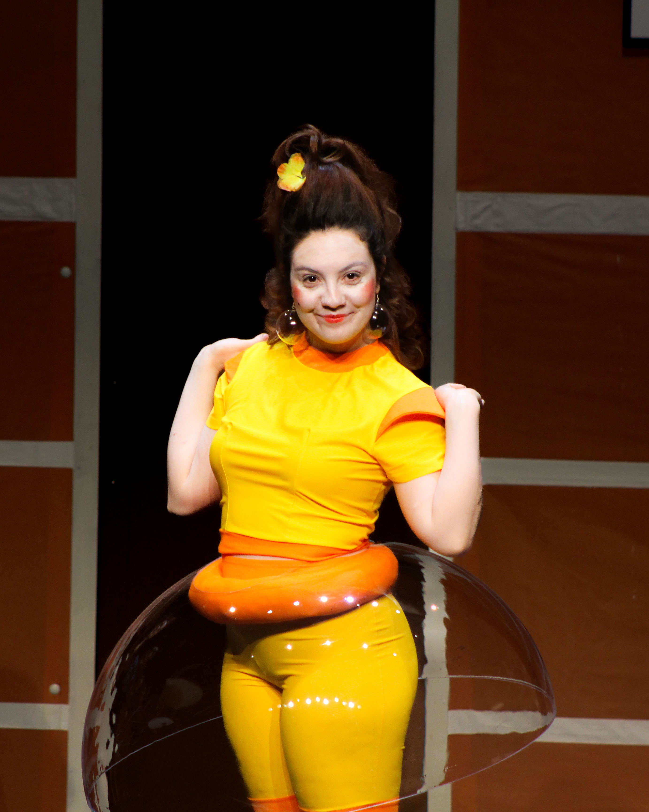
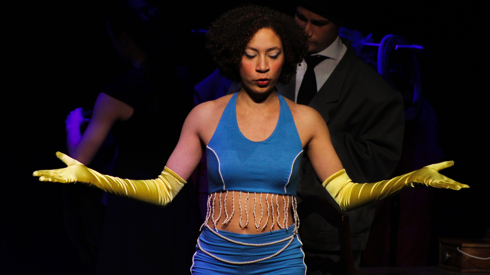
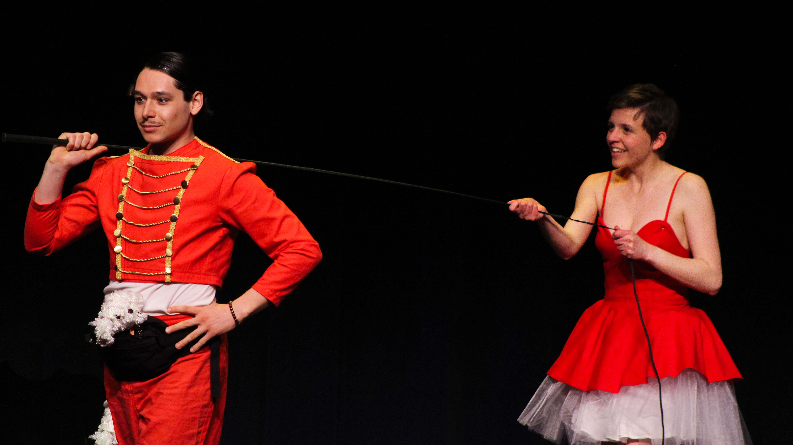
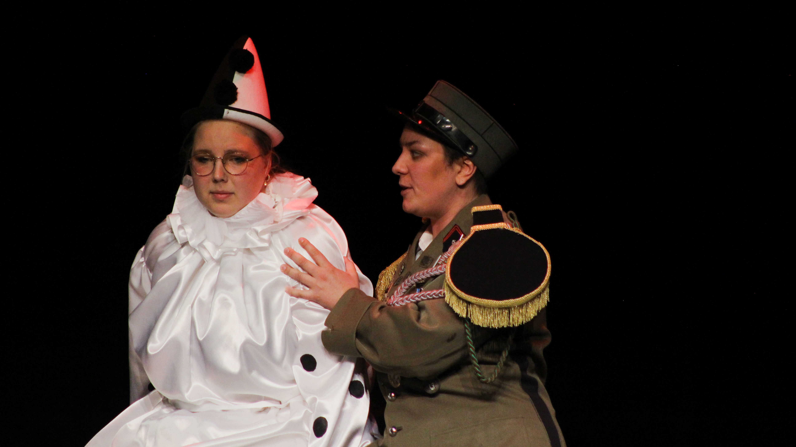
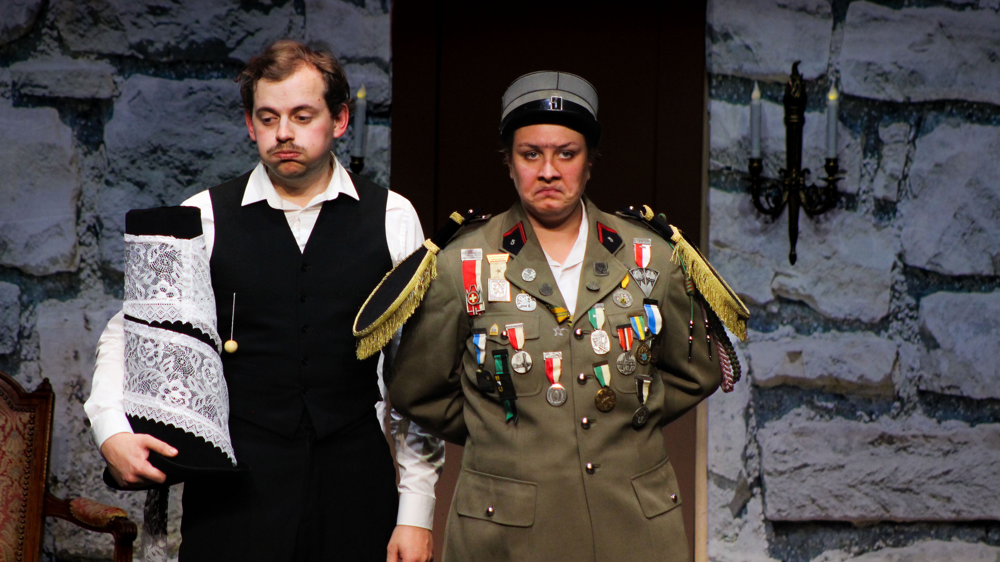
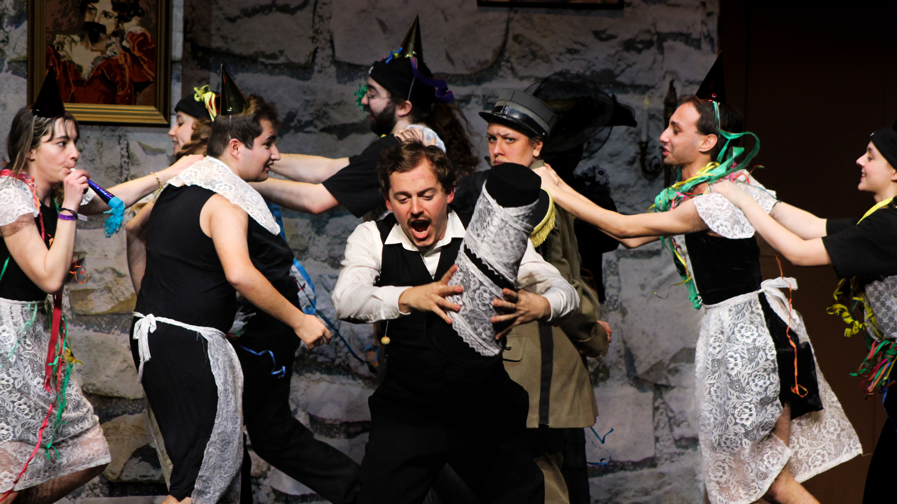
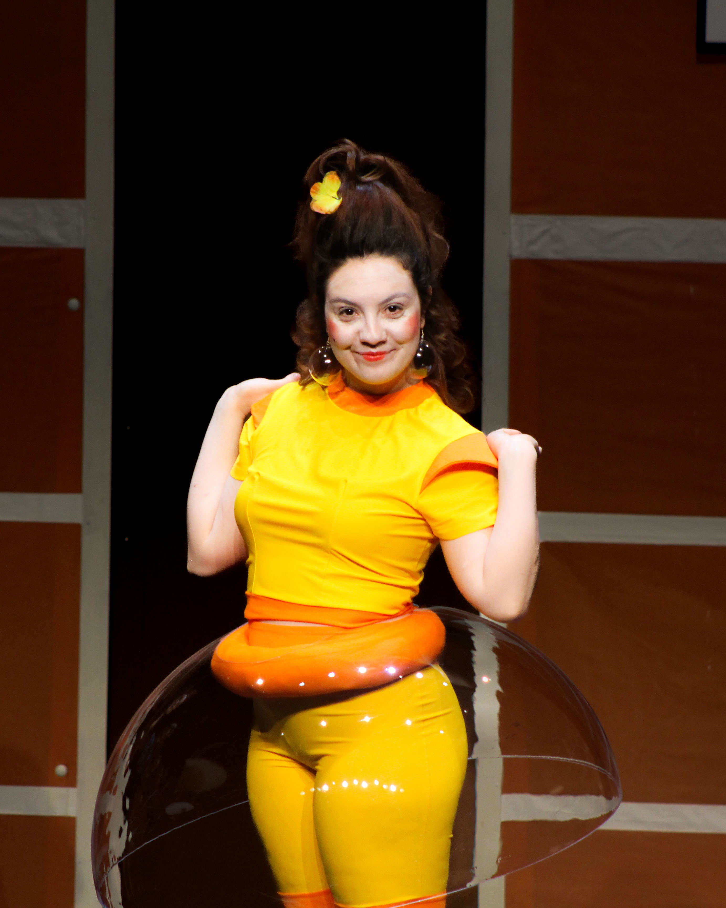
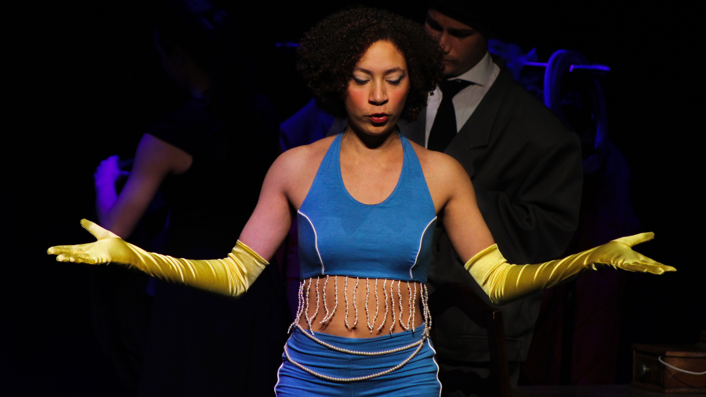
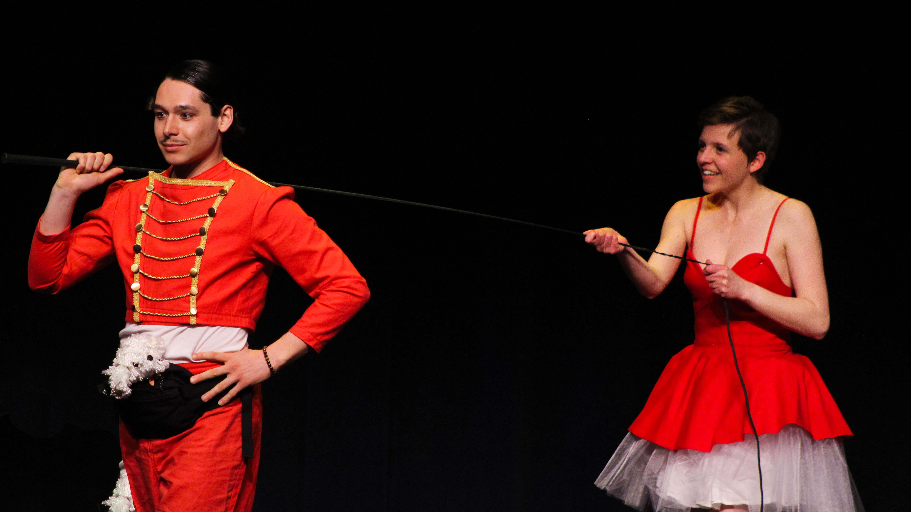
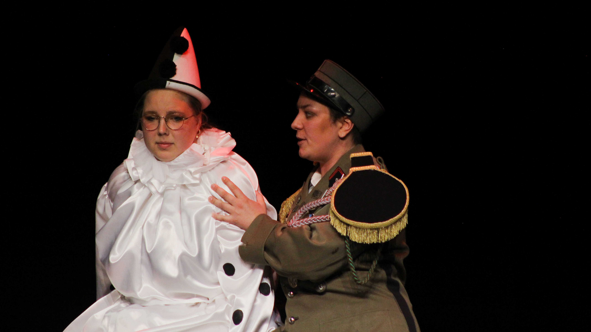
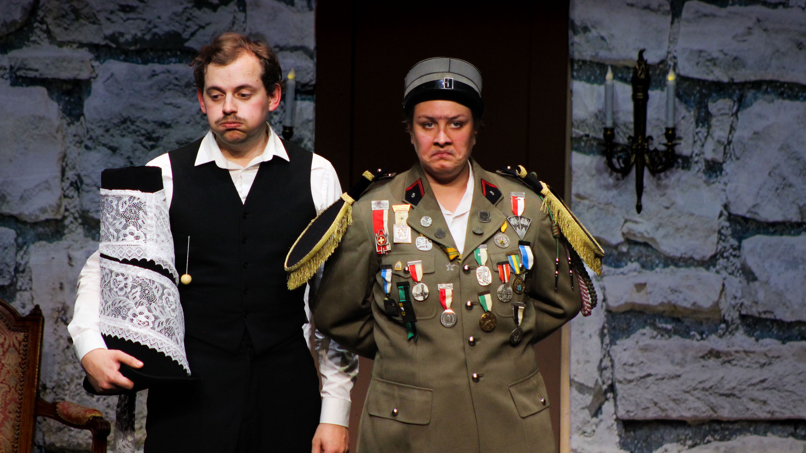
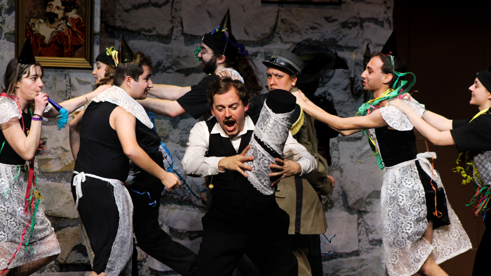
Costumes originaux conçus pour l'opérette, utilisation de divers matériaux dont de la dentelle du pvc thermoformé et du cuir.